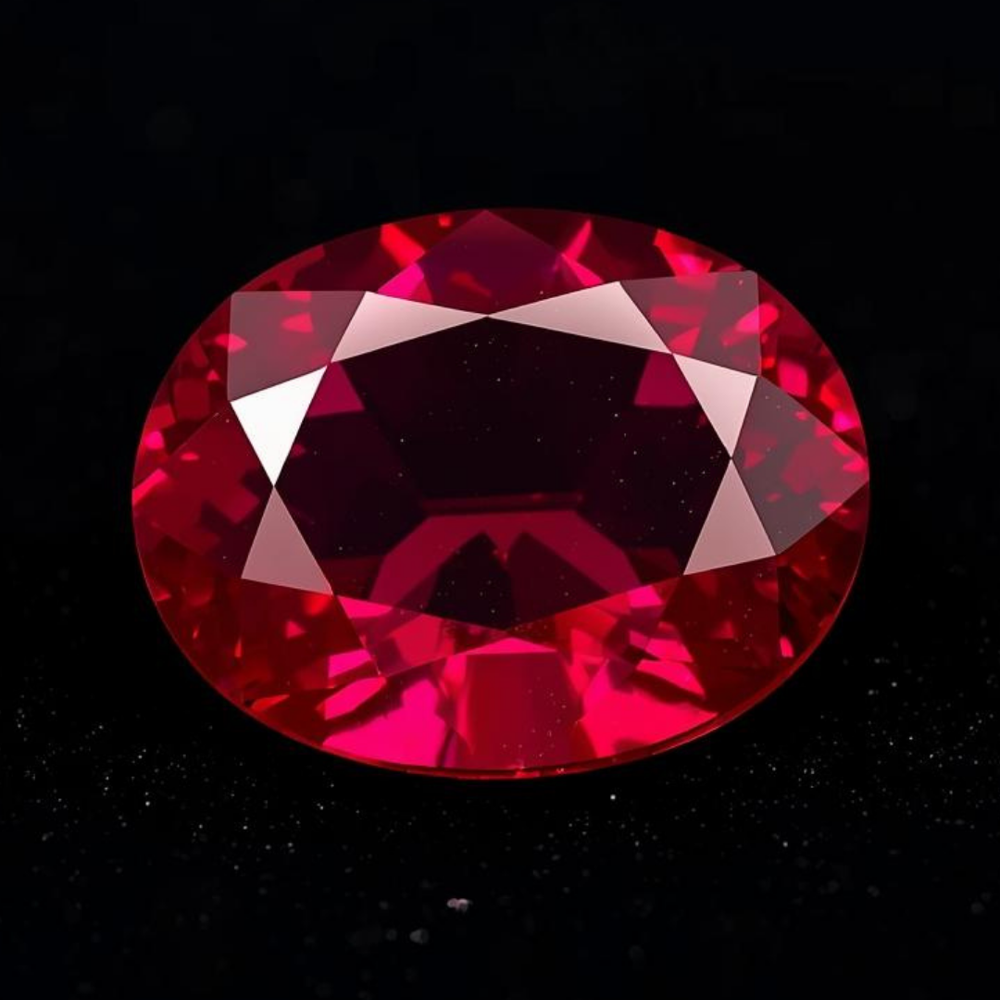
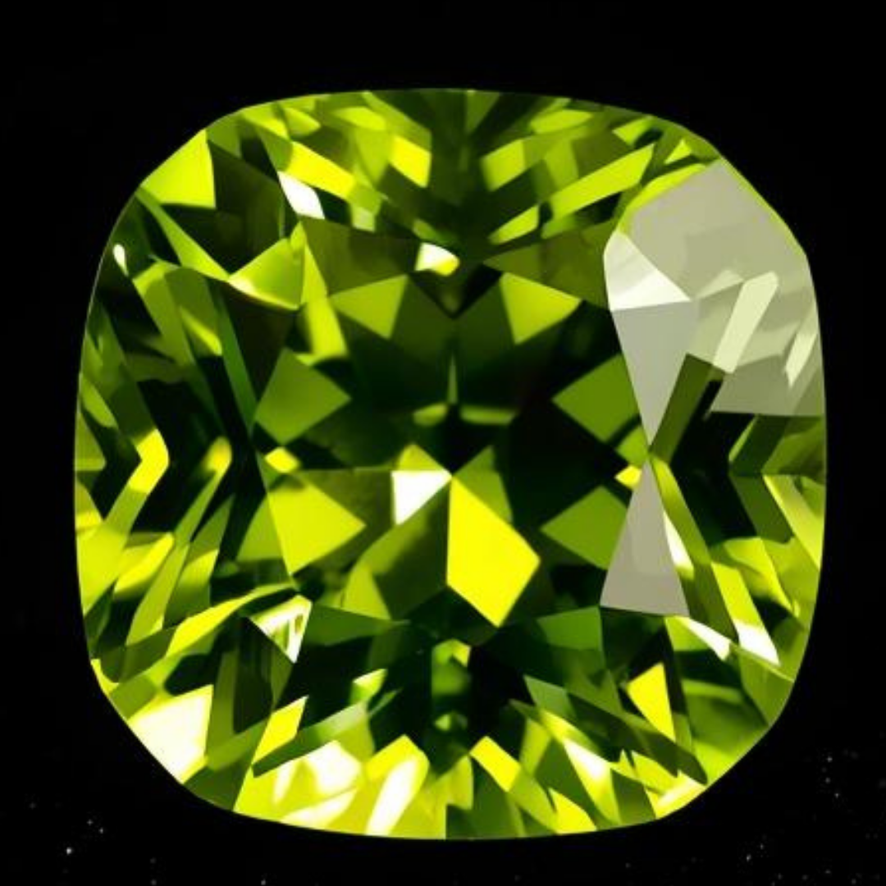
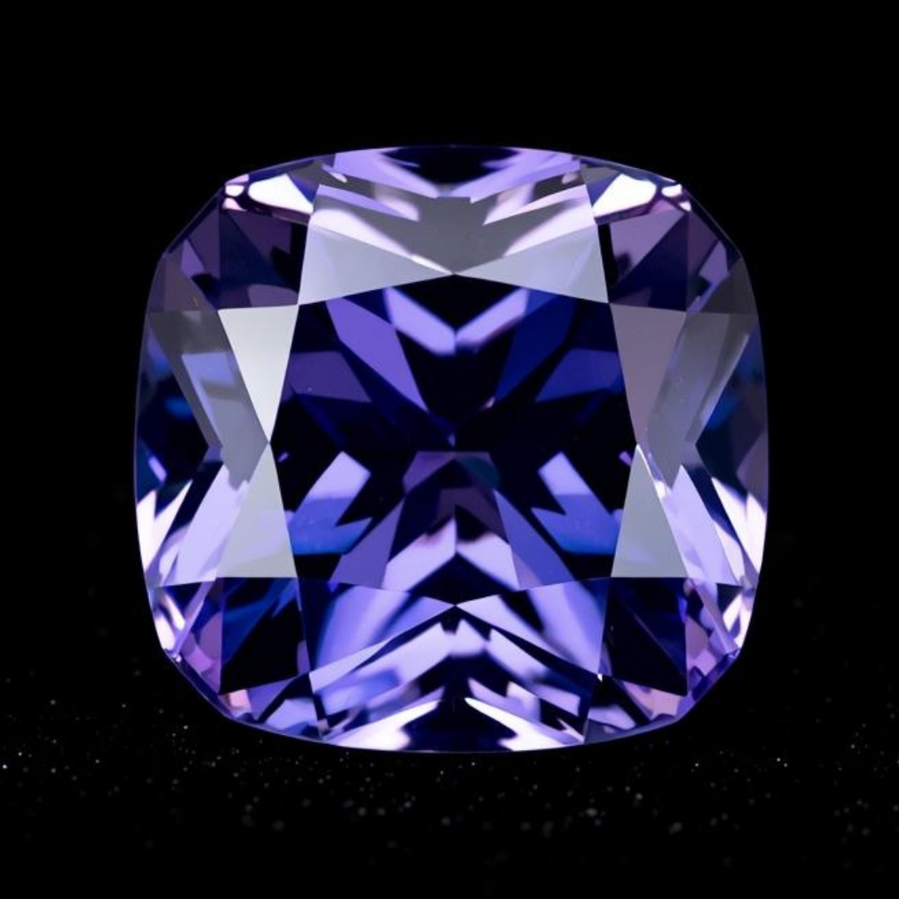
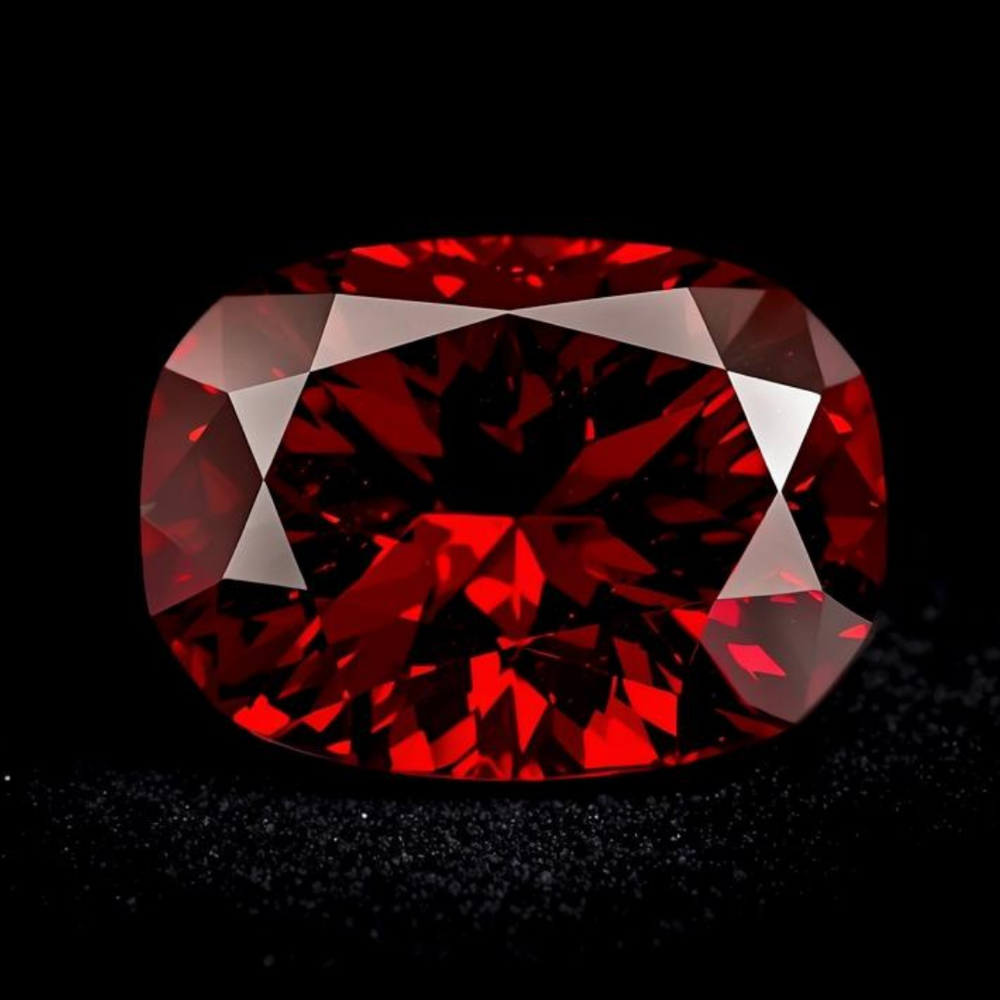
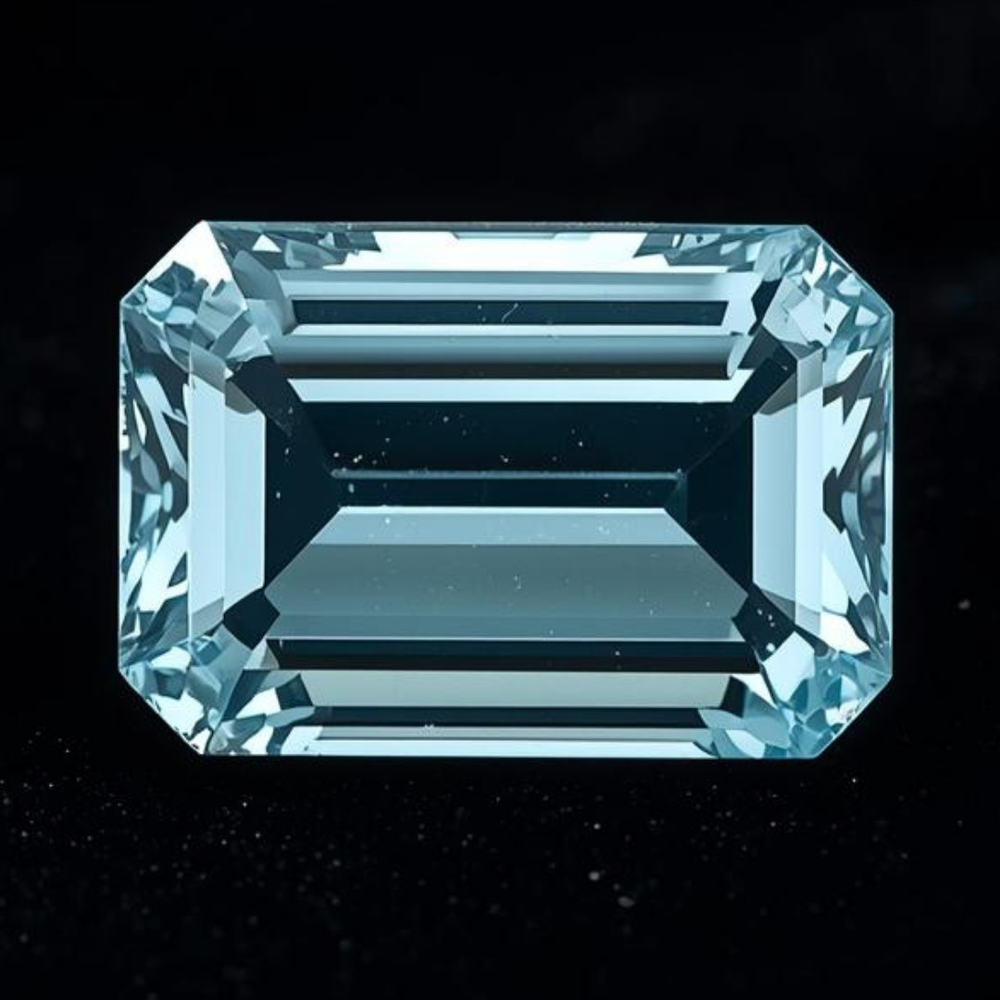

12星座の守護宝石
占星術の宝石は、黄道12星座の個人エネルギーと共鳴すると古くから珍重されてきました。Aurex Gem House では、スリランカとタイで厳格な基準のもと宝石を厳選し、権威ある鑑別書もご用意可能です。あなたの星座に合った守護石をお探しください。

牡羊座（3月21日〜4月19日） — ダイヤモンド
ダイヤモンドは力、勇気、透明を象徴します。自信とリーダーシップを高め、重要な場面で明晰な思考と強い意志を保ち、あらゆる挑戦において集中力と粘り強さを発揮させます。

牡牛座（4月20日〜5月20日） — エメラルド
エメラルドは知恵、調和、成長を意味し、感情のバランスと豊かさをもたらすとされ、表現力を高め、仕事と生活の着実な前進を支えます。

双子座（5月21日〜6月20日） — 真珠
真珠は純粋、安らぎ、感情のバランスを象徴し、心を落ち着け、コミュニケーションを高め、表現力豊かな双子座に内なる静けさと優雅な落ち着きをもたらします。

蟹座（6月21日〜7月22日） — ルビー
ルビーは生命力、情熱、守護を表し、感情の安心感と自信を高め、愛のエネルギーとポジティブな運勢を引き寄せます。

獅子座（7月23日〜8月22日） — ペリドット
ペリドットは喜び、力、再生を象徴し、豊かさを招き、ストレスを和らげ、獅子座の生まれ持ったリーダーシップと自信を強化します。

乙女座（8月23日〜9月22日） — サファイア
サファイアは知恵、明晰、自己規律を意味し、集中力と直感を高め、心の安定をもたらし、目標に向かって落ち着いて進む力を与えます。

天秤座（9月23日〜10月22日） — オパール
オパールはインスピレーション、調和、感情表現を象徴し、愛を育み、人間関係を調和させ、天秤座の生来の優雅な魅力を引き立てます。

蠍座（10月23日〜11月21日） — トパーズ
トパーズは力、明晰、変容を意味し、感情の安定と勇敢な守護をもたらし、順調な運勢と幸運を引き寄せます。

射手座（11月22日〜12月21日） — タンザナイト
タンザナイトは洞察、変容、霊的成長を象徴し、知恵と創造力を高め、視野を広げ、射手座の冒険と探求の精神に呼応します。

山羊座（12月22日〜1月19日） — ガーネット
ガーネットは安定、守護、野心を表し、自信と忍耐力を強化し、山羊座が恒常の努力と大きなビジョンで目標を達成する力を与えます。

水瓶座（1月20日〜2月18日） — アメシスト
アメシストは安らぎ、直感、澄んだ思考を象徴し、心を安定させ、創造性を刺激し、感情の優雅なバランスを保ちます。

魚座（2月19日〜3月20日） — アクアマリン
アクアマリンは安らぎ、勇気、明晰を意味し、感情を鎮め、直感を強化し、穏やかで確固たる自信を与えます。